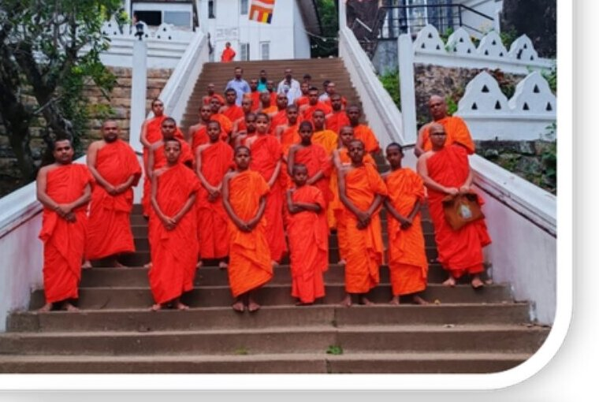
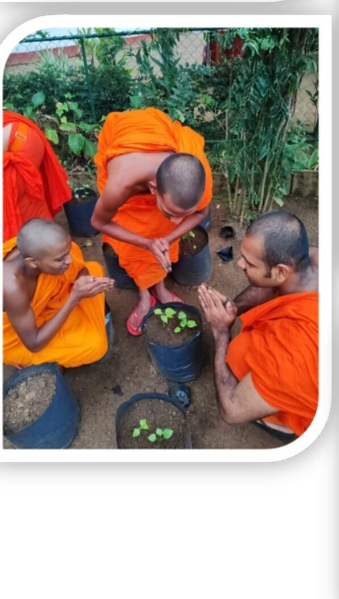
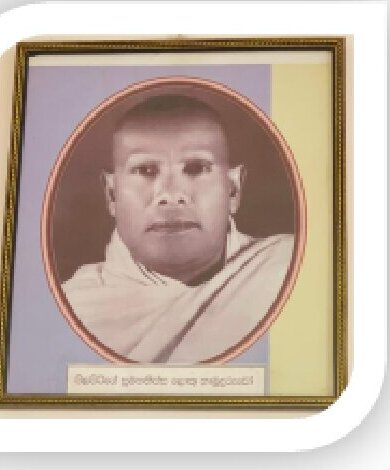
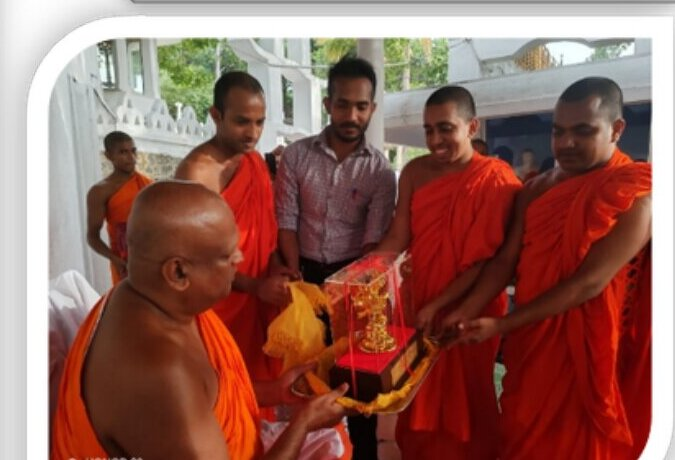
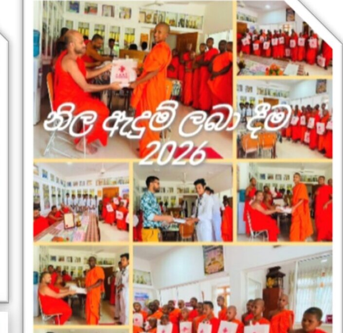
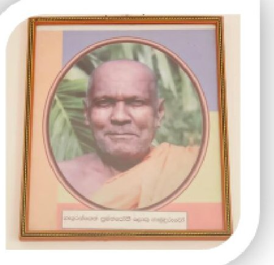
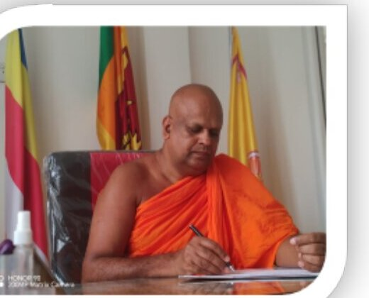
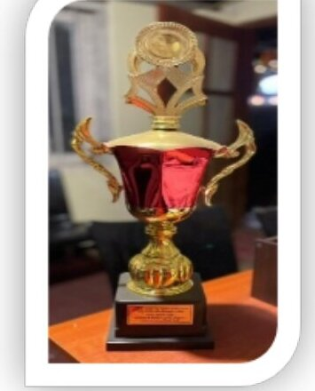

බෞද්ධ හා ශාස්ත්රීය අධ්යාපනය
ධර්මය, භාෂාව සහ ශාස්ත්රීය අධ්යයනය තුළින් දැනුමත් විචාරශීලී චින්තනයත් පෝෂණය කිරීම.
හඟුරන්කෙත තිස්සපෑල පින්බිමේ, ධර්මය හා විද්යාව එකට පෝෂණය කළ විද්යාකීර්ති මහා පිරිවෙනේ 67 වසරක අභිමානවත් ගමන්මඟට ඔබ සාදරයෙන් පිළිගනිමු.

පරපුරෙන් පරපුරට දිවෙන සසුන් මෙහෙවර
එදා කුඩා පැළයෙන් ඇරඹි ධර්ම ශාස්ත්රීය සේවාව අද දක්වා විහිදුණු ආකාරය.
1959 ජූලි මස 25 වැනිදා පිරිවෙන ආරම්භ විය. ගිහි පැවිදි දායකත්වයත් ගුරු පරපුරක කැපවීමත් එක්ව ධර්ම ශාස්ත්රීය අධ්යාපනයේ නව පරිච්ඡේදයක් සනිටුහන් කළේය.
25 JULY 1959
ARCHIVE / 1959විනයෙන් සැකසුණු සිත් — දැනුමෙන් පෝෂිත ජීවිත — සමාජයට ආලෝකයක්.


තිස්සපෑල විද්යාකීර්ති මහා පිරිවෙන යනු දහම් දැනුම, භාෂා ශාස්ත්රය, විනය සහ සමාජ සත්කාරය එක් කළ ඓතිහාසික පිරිවෙන් අධ්යාපන මධ්යස්ථානයකි. එහි ආරම්භය 1959 දක්වා දිව යයි.
බෞද්ධ අධ්යාපනයට අමතරව ආගමික, ශාස්ත්රීය සහ සංස්කෘතික සේවාවන් රැසක් ඔස්සේ පිරිවෙන ප්රදේශයටත් සම්බුද්ධ ශාසනයටත් තම මෙහෙවර ඉටු කරයි.
අධ්යාපනය දැනුම පමණක් නොව යහපත් චරිතයක් ගොඩනගන ගමනක් බව අපි විශ්වාස කරමු.
ධර්මය, භාෂාව සහ ශාස්ත්රීය අධ්යයනය තුළින් දැනුමත් විචාරශීලී චින්තනයත් පෝෂණය කිරීම.
සීලය, විනය, ආචාරධර්ම සහ බෞද්ධ සාරධර්ම මුල් කරගත් පැවිදි ජීවිතය ගොඩනැගීම.
ශිෂ්ය භික්ෂූන් වහන්සේලාගේ දක්ෂතා, සේවා ආකල්ප සහ සමාජ වගකීම දියුණු කරන කටයුතු.
ආරම්භයේ සිට වර්තමානය දක්වා ධර්ම ශාස්ත්රීය මෙහෙවරට දිවි කැප කළ ගුරු පරපුර සිහිපත් කරමු.
පිරිවෙනේ මුල් අඩිතාලම දැමූ ආදි කර්තෘ පරපුර

02අඛණ්ඩව පවත්වාගත් ධර්ම ශාස්ත්රීය සම්ප්රදාය
විද්යාකීර්ති ගමන්මඟට දිරි දුන් ආචාර්ය පරපුර

04නව පරපුරට දහම් හා දැනුම සම්ප්රේෂණය කරන අඛණ්ඩ සේවාව
ඡායාරූප හා ඓතිහාසික විස්තර: පිරිවෙනේ 1959–2026 විද්යාකීර්ති සංවත්සර ලේඛනය.
පිරිවෙනේ අධ්යාපනික, ආගමික හා සමාජ මෙහෙවර සම්මාන, ඇගයීම් සහ ශිෂ්ය ජයග්රහණ රැසකින් සනිටුහන් වී ඇත.
ජාතික ඵලදායිතා සම්මාන හා ඇගයීම්
පිරිවෙන් අධ්යාපන කාර්යසාධන ඇගයීම්
වාර්ෂික ශිෂ්ය හා දහම් පාසල් ජයග්රහණ

සංවත්සර ලේඛනයේ සම්මාන පිටු විශාල කර බැලීමට ඡායාරූපයක් ඔබන්න.
වැඩසටහන්, පරිත්යාග, ශිෂ්ය ක්රියාකාරකම් සහ 2026 සංවත්සර ගමන්මඟේ සජීවී දසුන්.
2026 සංවත්සර ලේඛනයේ සඳහන් අනාගත අරමුණු අතර ඩිජිටල් පුස්තකාලය, Online ධර්ම දේශනා සහ නව අධ්යාපන අවස්ථා දක්නට ලැබේ. මේවා ඉදිරි සැලසුම් ලෙස ඉදිරිපත් කර ඇත.
ප්රධාන පිවිසුමේ QR කේතයෙන් පිවිස, ඔබට අවශ්ය ස්ථානය තෝරා වීඩියෝ මඟපෙන්වීමක් ලබාගැනීම සඳහා සූදානම් වන විශේෂ අංශය.
ප්රධාන පිවිසුමේ සිට ආවාස ගෙයට මඟ.
වීඩියෝව ළඟදීමඅධ්යාපන ගොඩනැගිල්ලට පිවිසෙන මාර්ගය.
වීඩියෝව ළඟදීමදාන ශාලාව වෙත පහසු මඟපෙන්වීම.
වීඩියෝව ළඟදීමඅමුත්තන් සඳහා පහසුකම් සොයාගන්න.
වීඩියෝව ළඟදීම1959–2026 විද්යාකීර්ති සංවත්සර ලේඛනය — පිටු 28ක මුල් PDF පිටපත.
පිරිවෙන් විහාරස්ථානයට අනුබද්ධ ආගමික ස්ථාන දහයක තොරතුරු සහ ඔබ එවූ සැබෑ දර්ශන මෙහි එක් කර ඇත.
මුල් ලැයිස්තුව විශාල කර බැලීමට පින්තූරය ඔබන්න.
තිස්සපෑල විද්යාකීර්ති මහා පිරිවෙන, පුස්සලමංකඩ පාර, හඟුරන්කෙත. Google Maps හරහා පහසුවෙන් මඟ සොයාගන්න.